1,562
commits
This is the honest build history of Azimuth Photo: a self-hosted photo library that started as 228 lines of Python and became an AI-native Lightroom — with semantic search, an Elo-ranked culling engine, and a physically-modeled film emulation engine built out by a fleet of AI agents.
You cannot honestly star-rate ten thousand photos. But you can always answer one question: this one, or that one?
The very first commit is a 228-line Python script called PhotoRanker. It opens a black Tkinter window, shows you two of your photos side by side, and waits. You click the better one. It updates a chess Elo rating for both, loads the next pair, and waits again.
That's the whole idea, and it's a good one. A 1–5 star scale collapses under its own subjectivity by the third shoot — is this sunset a 4 or a 5? Elo sidesteps the question entirely. Every click is a tiny, honest comparison, and thousands of them resolve into a single global order. The best photos naturally rise; the pairing is even biased toward the current top ten, so your leaders keep getting stress-tested against each other.
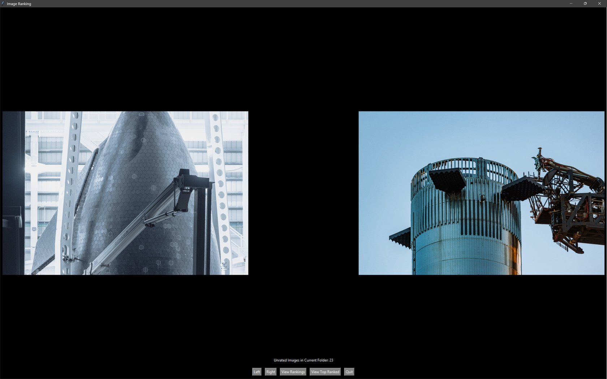
def update_elo_rank(winner_elo, loser_elo, K): expected_winner = 1 / (1 + 10 ** ((loser_elo - winner_elo) / 400)) winner_elo += K * (1 - expected_winner) loser_elo += K * (expected_winner - 1) return winner_elo, loser_elo # adaptive K: swing hard when ratings are close, gently when far apart K = 32 if abs(winner_elo - loser_elo) < 100 else 16
That adaptive K-factor is the entire ranking philosophy in two lines, and — remarkably — it survives, almost unchanged, into the app you can run today. Everything else was thrown away and rebuilt. This wasn't.
Try it. This is the real update rule, wired to a handful of Sean's photos:
"Propagated" is a preview of a much later idea (Chapter 03): when you pick a winner, its visual look-alikes should move too. Here it's faked with tile-adjacency; in the real app it's cosine similarity over CLIP embeddings.
Then the toy went quiet. One commit in September 2023, three in August 2024 (blacklisting, controller support), and then eighteen months of silence. The idea was right. The shell was a dead end. It would take a completely different kind of tooling to wake it up.
Same idea. New body. The comparison leaves the desktop and moves to where the library actually lives — the browser.
In February 2026 the project restarts as a web app. Two commits. The Tkinter window becomes a FastAPI server and a dark HTML page. But the interesting change isn't the stack — it's a new way to ask the question.
Instead of a strict two-up duel, there's now a mosaic: a grid of candidates where you pick the single standout and everything else takes a small loss. More judgments per click, less fatigue. The same Elo math, fed faster.
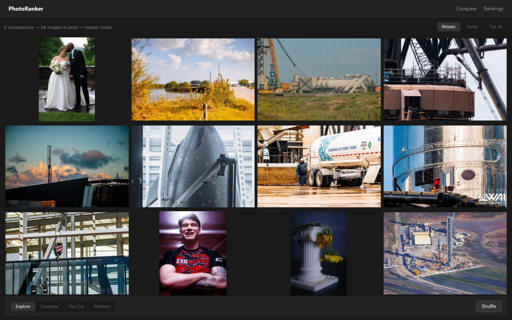
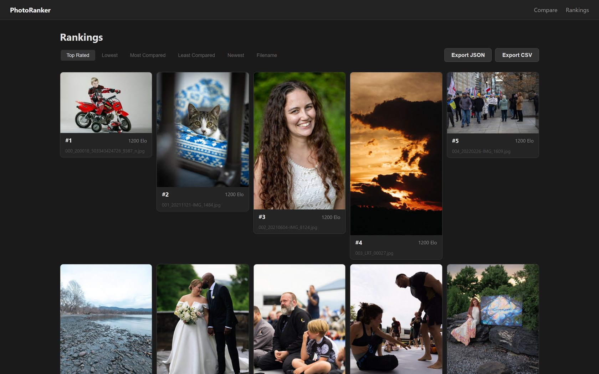
In a single day, the ranker learned to see. And by the last commit, it had a new name.
April 21st is the most important day in the whole history. Read the commit list in order and you can watch a tool become a product:
CLIP active learning → a unified bottom bar → an AI panel with effective-Elo pairing → a Library page with a justified grid and AI search → Qwen3-VL-Embedding-8B for state-of-the-art search → rename PhotoRanker → photoArchive → lightbox, find-similar, duplicate detection, EXIF, k-means auto-collections → Qwen3-VL-2B-int4 "to fit the GPU alongside other apps."
The core realization: a photo library shouldn't make you type tags. It should understand the pictures. Embeddings turn every image into a vector; suddenly you can search "golden hour over water" in plain language, find everything visually similar to a frame you love, and cluster a shoot automatically — all without a single keyword.
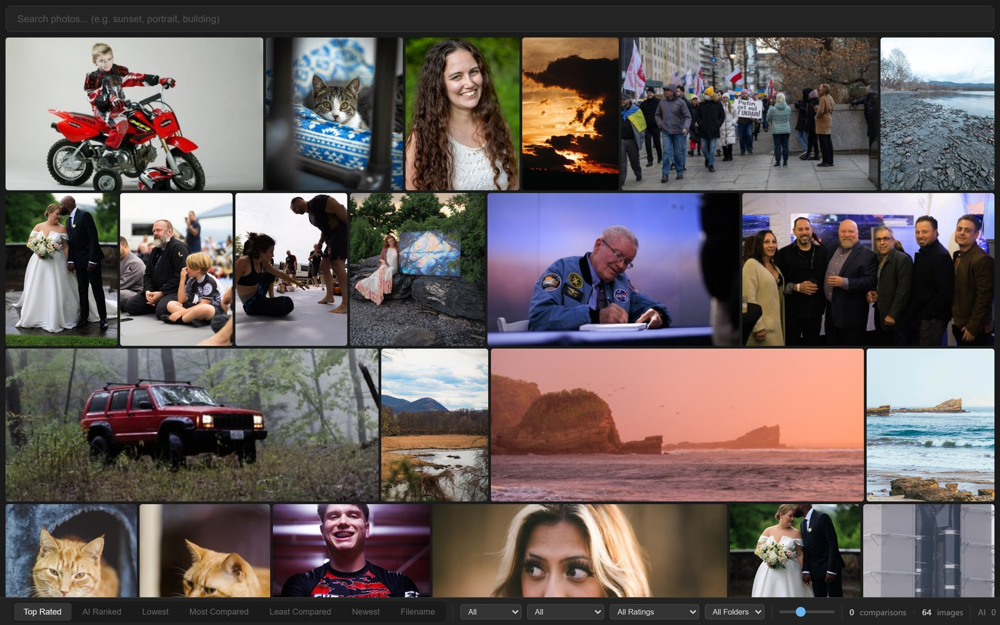
The state-of-the-art 8-billion-parameter embedding model was chosen at 10am and abandoned by evening for a 2-billion-parameter int4 version. Why? It had to share a single 8GB GPU with Sean's other resident AI models. "Fits the GPU alongside other apps" is the first appearance of a constraint that never leaves: this is a real machine, not a datacenter. Half the engineering in this log is a negotiation with 8GB of VRAM.
A four-day sprint that set the law the app still lives by: profile first, and never widen a budget to hide slowness.
With intelligence in place, photoArchive got obsessed with speed — the way only a tool you use every single day can. Over four days the commit log reads like a benchmark changelog, and each win came from the same move: stop asking the slow disk, and answer from memory.
The headline win — thumbnails 30–50× faster — is almost embarrassingly simple in hindsight. Every thumbnail request was doing an os.stat() on a spinning HDD plus a lock-contended SQLite lookup, even for images already sitting on the SSD. The fix: build a (size, image_id) → path dictionary once at startup and never touch the database on the hot path again.
# In-memory index: (size, image_id) -> disk path. Built once, updated on writes. _disk_path_index: dict[tuple[str, int], str] = {} def fast_disk_read(size: str, image_id: int) -> bytes | None: """Fast path: SSD read via in-memory index. No SQLite, no locks, no HDD stat.""" if not _disk_index_built: _build_disk_path_index() path = _disk_path_index.get((size, image_id)) if path is None: return None with open(path, "rb") as f: return f.read()
The same sprint refined the Elo propagation the demo above hinted at. When you pick a winner, its embedding-neighbors are nudged too — so ranking a 20,000-image archive doesn't require comparing every pair. The trick is a cubic falloff: a near-identical 0.99-similar frame gets 89% of the change, but a barely-qualifying 0.75 match gets almost nothing. That's why they could raise the neighbor count to 100 for free.
def _nonlinear_weight(similarity: float) -> float: """Cubic remap so near-identical images get strong propagation, barely-qualifying ones get almost none. linear: 0.75→0.75 0.90→0.90 0.99→0.99 cubic: 0.75→0.00 0.90→0.22 0.99→0.89 """ t = (similarity - SIMILARITY_THRESHOLD) / (1.0 - SIMILARITY_THRESHOLD) return t * t * t # cubic
The fastest photo app ever made. Profile first; never widen a timing budget to mask slowness.
The least glamorous chapter — and the one that made every chapter after it possible.
Over a single weekend, ~130 commits with names like refactor: drain compare route facades land back to back. A monolithic app.py is dismantled into feature modules; the thumbnail cache becomes its own package; every route, every controller — loupe, mosaic, date-scrubber, pregeneration — is extracted and given a home.
It's tedious to read and it was surely tedious to do. But you cannot bolt a physically-modeled darkroom onto a ten-thousand-line file. This weekend is the foundation the entire second half of the story is built on. Boring, and load-bearing.
A charter is written: mobile is Google Photos. Desktop is Lightroom Classic. Same library, two personalities — and a native Android app for the third.
By summer the product vision crystallizes into a single sentence and a hard split. On the phone, photoArchive should feel like Google Photos — effortless, scrollable, one-handed. On the desktop, it should feel like Lightroom Classic — dense, keyboard-driven, serious. In June a native Kotlin/Compose Android client is born; in early July the desktop /d and mobile /m surfaces get a unified redesign with real writes, stacks, safe trash, share links, and smart collections.
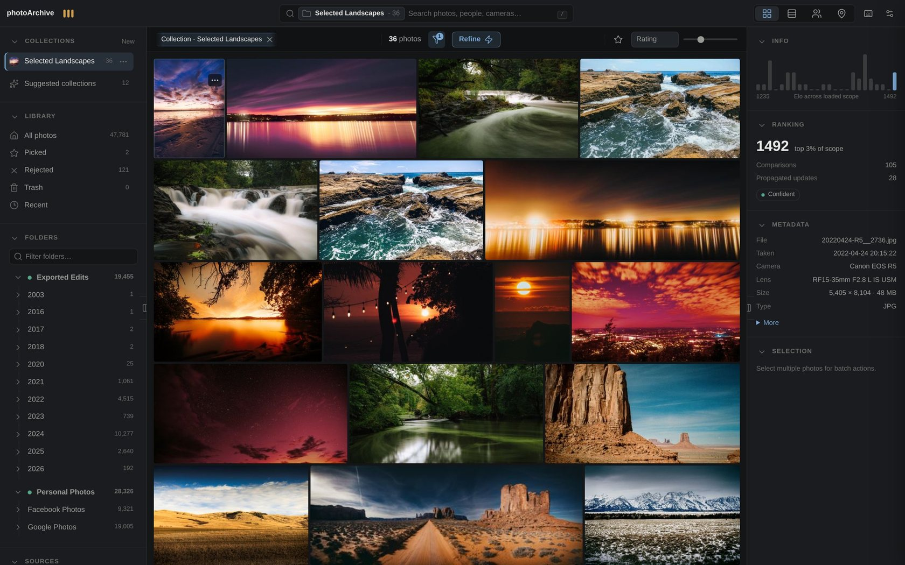
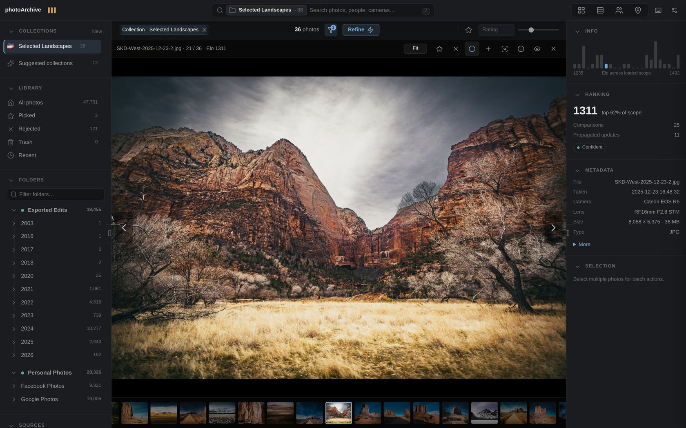
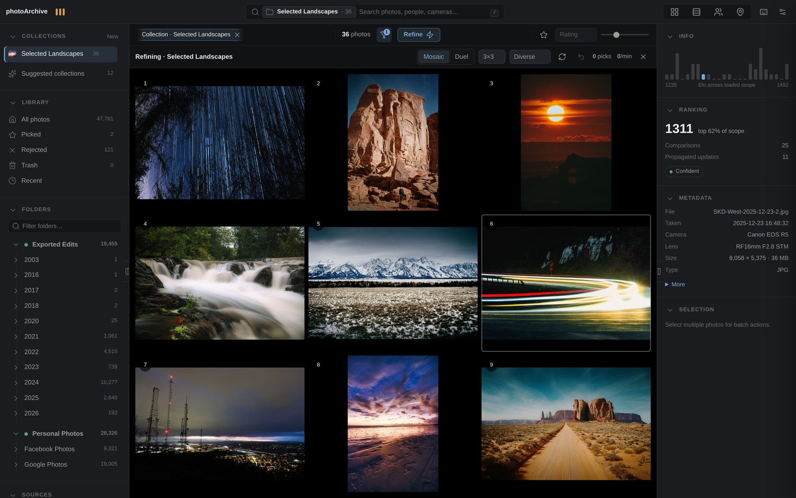
Search v2 added a vision-language caption model for a text understanding index. Getting a 4-bit 7B VLM to load beside a resident voice daemon on one 8GB card took a string of commits — whole-model GPU placement, a hard 1280px cap on vision input ("uncapped previews demand >9GiB of attention memory"), and finally a retreat to a 3B captioner. Honest engineering against a wall that doesn't move.
photoArchive stops being a manager and becomes an editor — aiming, explicitly, to beat Lightroom, darktable, and Affinity pillar by pillar.
This is the technical peak of the whole project. In three days, a full RAW develop module appears: a live WebGL2 pipeline with Lightroom-ordered panels, an interactive tone curve, HSL, a clipping histogram, crop, masking, and history — plus its own RAW decoder, its own color science, and a film emulation engine that models actual photochemistry.
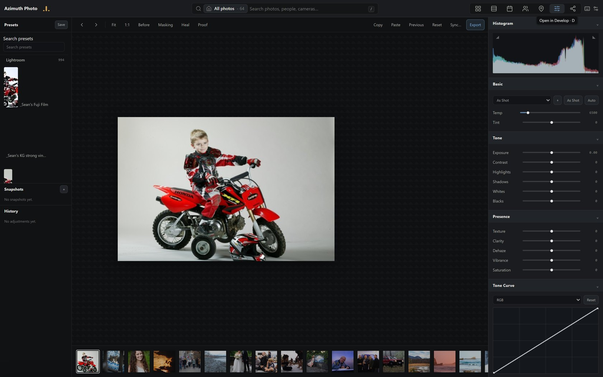
Here's the central discipline of the whole module. Every editing operation exists twice: once in NumPy (the export truth) and once in GLSL (the live preview). If they disagree, your edit looks one way on screen and exports another — the cardinal sin of a photo editor. So both twins are pinned to a single shared constants table, and a test enforces that they land within 0.4 of 255 on every pixel, across 53 operations.
TINT_UV_SCALE = 3000.0 LUMA_RED = 0.2126; LUMA_GREEN = 0.7152; LUMA_BLUE = 0.0722 TONE_GAMMA = 2.2 # ... 50+ more named constants ... # PARITY_TABLE auto-collects every uppercase constant, so no value can # silently drift out of the GL↔numpy contract. PARITY_TABLE = { name: value for name, value in tuple(globals().items()) if name.isupper() and name != "PARITY_TABLE" }
You can feel the parity yourself. Drag the exposure below — the left canvas is the "GL" fast path, the right is the "numpy" reference. The per-pixel max difference stays at zero:
The showpiece is film.py — a physically-modeled film emulation engine. It is not a LUT or a color grade. It models the photochemical chain: spectral layer exposure, halation, H&D characteristic curves, DIR coupler inhibition, and per-layer grain. The famous CineStill 800T red glow around bright lights isn't painted on. It emerges, because bright scene light physically bounces off the film base and back into the red-sensitive layer.
# halation: bright scene light bounces off the base into the red layer hal = t["halation"] amount = hal["amount"] * halation_scale if amount > 0.0: luma = rgb @ np.float32([0.2126, 0.7152, 0.0722]) excess = np.maximum(luma - hal["threshold"], 0.0) glow = _gaussian_blur(excess, sigma) layer[..., 0] += amount * glow # red bleed layer[..., 1] += amount * hal["green_fraction"] * glow # a touch of green
That's the actual algorithm below — a synthetic night scene, threshold the bright spots, blur them, bleed them back into red. Turn halation up and watch the glow appear on the lights. This is the film engine's core, running live:
Eight film stocks were datasheet-anchored, then tuned against 53 real San Marcos lab scans (Portra 400, Gold 200, Fuji 400, HP5). The halation radius came from measuring the actual red-minus-blue falloff around lights in Sean's own scanned negatives.
Lightroom's lossy DNGs (JPEG XL, DNG 1.7) can't be unpacked by LibRaw at all. So the develop module grew its own decoder: read the LinearRaw pyramid directly, then apply the DNG spec's color pipeline by hand — black/white levels, AsShotNeutral white balance, ForwardMatrix to XYZ, a Bradford-adapted matrix to linear sRGB, BaselineExposure. A 2048px base decodes in 0.4 seconds. And the whole thing is calibrated to be pixel-matched to Sean's actual Lightroom exports — a B&W conversion pair came out "near-indistinguishable."
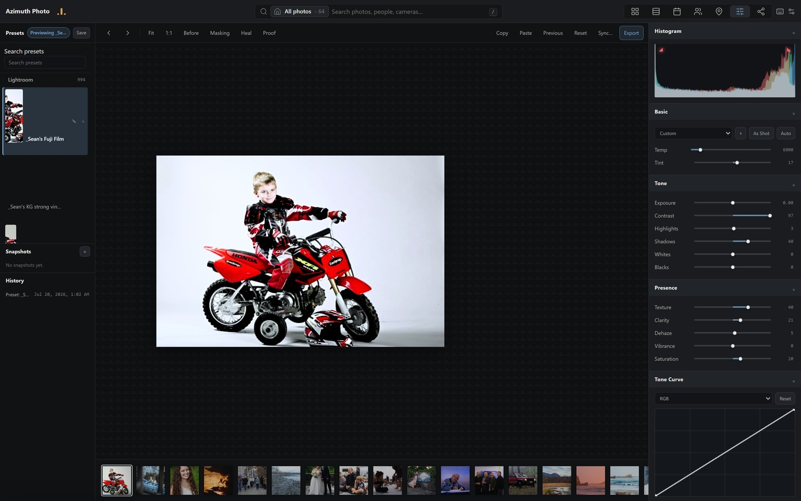
Every number here is lifted straight from a commit message. Nothing was widened to hide a regression — that was the rule.
The library stops living on one machine. A laptop in the field, a hub at home, a phone in your pocket — one catalog, converging.
The three faces from Chapter 05 needed to actually share a library. So the app grew a satellite ↔ hub architecture: a catalog mirror, tiered thumbnails, predictive prefetch, and an oplog that converges rather than a request that blocks. The governing rule — the laptop never waits on the server. You cull on the plane; it reconciles when you land. Geodata backfill, a Google Timeline importer, and keyword/IPTC support land in the same window.
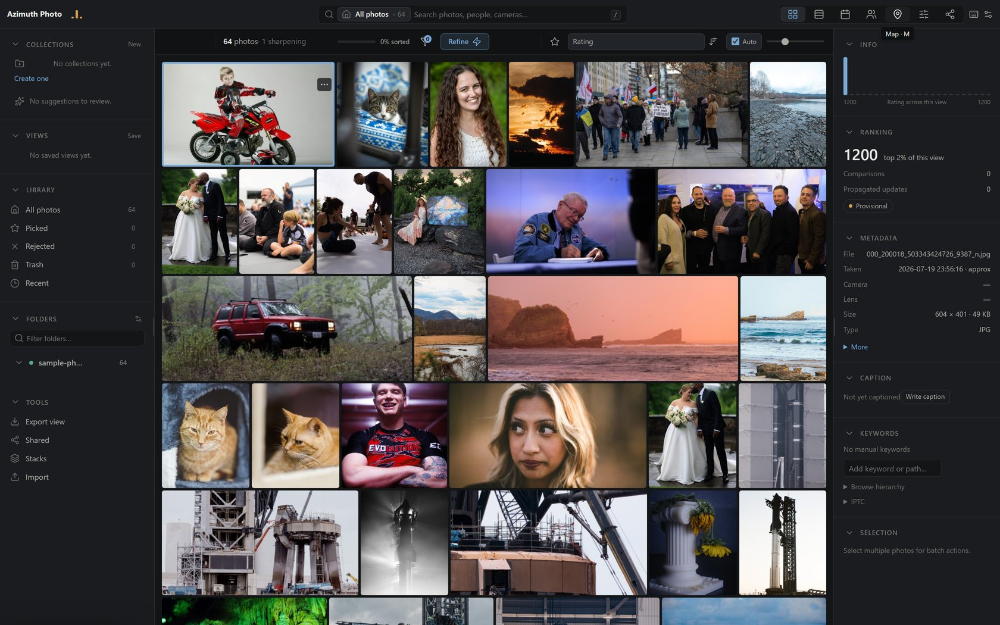
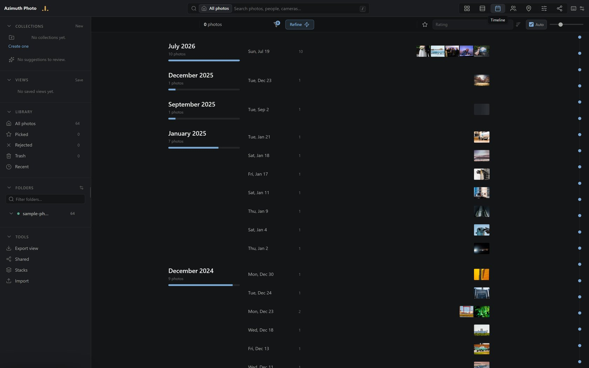
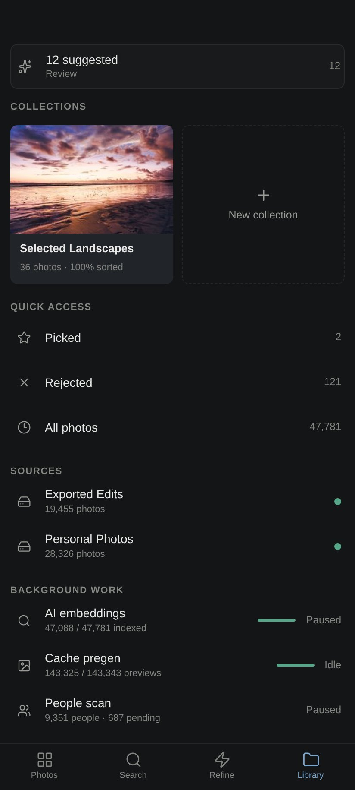
photoArchive gets a real name, a real installer, and a real front door — the turn from "my tool" to "a thing other people can run."
photoArchive → Azimuth Photo. A brand layer across the wordmark, the PWA manifest, the Android launcher, the Tauri desktop shell; bundle IDs move to app.azimuthphoto.*. Crucially, the internal identifiers, paths, and database names are left untouched and sequenced behind in-flight work — a rename done like an engineer, not a marketer. A Docker image, a compose file, an Unraid template, and an INSTALL.md for NAS boxes turn it into something installable. A full Google-Photos-replacement Android client — timeline, auto-backup, free-up-space — ships the same week.
Commit the phone client source — it was untracked on every machine. Git is the backup.
The scariest commits in the log. Every one is a real incident — mostly caught in review, some in production.
The phone deletes a local photo once the hub reports it "backed up." The manifest counted trashed, missing, and mirror rows as backed up — so the feature could delete a photo the hub didn't actually have. The fix requires on-disk byte proof: a live original, present, at the expected size.
A nightly 04:00 job used shared temp filenames across instances. Two instances collided and left prod with zero sealed snapshots. Fixed with per-process temp names, an orphan sweep, and a weekly restore drill proven against a real 150k-image snapshot.
The website publish hook was a shell command the client could set — a verified RCE. Closed by making the hook server-side-only and adding default-deny owner authentication to every non-public route.
Scanning a source that happened to be offline marked every photo missing. A data-loss guard now refuses to let an empty online scan blank the catalog.
The 4-bit 7B vision model's CPU-offload path crashed on this transformers/bnb pairing. The resolution: whole-model GPU placement so a clean OOM is at least recoverable — and a permanent retreat to a 3B model.
The most surprising thing in the git graph: for the final push, the app was built out by a fleet of AI models, each owning a lane, checking each other's work.
July 2026 has 1,133 commits — 72% of the entire project. Read them and a structure emerges: a session-lane charter, an explicit org model of "CEO / CTO / managers / subagents," and hundreds of merges from named branches — qfix-workers, ux2-perf, errhonesty, dt-gfilter. This is a human designer directing a fleet of frontier models, each taking a lane, with cross-model review as a hard rule: whoever wrote it cannot be the one to bless it.
Owns the vision, the specs, the naming, and the final diff review. Decides what ships. Never trusts a delegate's own summary of its work.
Flat-rate coding lanes that take a tight spec and return a branch. Literal, fast, and required to prove their work with a passing gate.
Parallel reviewers fired liberally at every merge — confident, occasionally wrong, so every finding is independently verified before it counts.
A different model tries to refute each change. Five real regressions in one night's UX wave were caught exactly this way.
The lane that names this era is error-honesty: the app must never lie about its own state. Toasts only after the write commits. Loading, empty, and "preparing" states that tell the truth. Worker waits that read as active work. "Photos exist on screen immediately, and it is never a void." An entire quality program — dozens of qfix merges in a loop-until-dry rhythm — enforcing the idea that a confident-looking lie is worse than an honest "working on it."
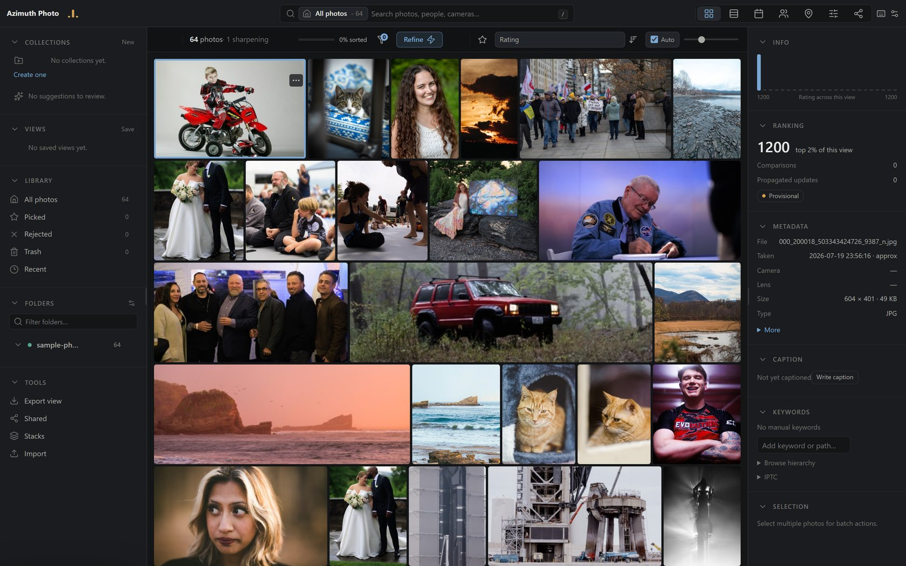
Three lessons run through all 1,562 commits like grain through film.
Speed is a feature you defend, not a number you report. The doctrine from Chapter 03 — profile first, never widen a budget to hide slowness — is why boot went 65s→5s and search 2.1s→0.7s instead of the reverse.
Honesty is an architecture, not a manner. Whether it's a UI that won't fake a success toast, a backup that requires byte proof, or a twin that must match to 0.4/255 — the recurring move is refusing to let the system claim something it can't back up.
Your originals are sacred. Every war story is a variation on one fear: losing a photo you can't get back. Collision-proof before deletion, hash-gate every purge, verify the final state — not the intermediate one.
AZIMUTH · FIELD LOG — a development log built from the real git history of Azimuth Photo.
Every screenshot on this page was captured by checking out the exact commit and running that era's software against a fixed set of 64 of Sean's real photographs — the 2023 Tkinter app included. Every benchmark and code excerpt is quoted from the commit that shipped it.
Span 2023-08-11 → 2026-07-20 · Commits 1,562 · Peak 1,133 in one month · Twin parity <0.4/255 · Film stocks 8, tuned on 53 real lab scans.